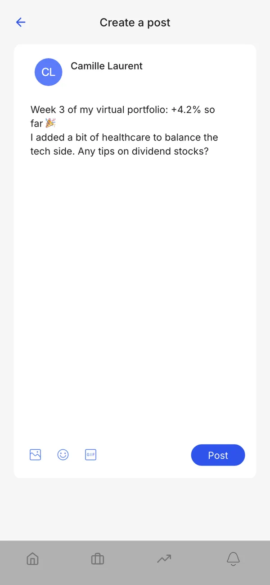

Skade
Application pour apprendre à investir sans risque : portefeuilles virtuels, communauté d'investisseurs et actualités des entreprises.


Apprendre à investir, ensemble
Quand je suis arrivée, l'application existait déjà. J'ai repris ses interfaces pour les peaufiner et les adapter au mobile, puis j'ai réalisé la landing page.
De l'application à la landing page
- 12.2022Accueil de l'application : version responsive.
- 01.2023Publications : intégration des nouvelles maquettes : création d'une publication, réponses, page d'une publication, et navigation mobile avec son bouton de création.
- 05.2023Cartes des entreprises : intégration du nouveau style, avec graphique, et fenêtre d'ajout d'une opération au portefeuille.
- 07.2023Marché et actualités : intégration du nouveau style, et écrans pour un portefeuille encore vide.
- 08.2023Composants : boutons unifiés avec transitions, avatars générés à partir des initiales.
- 09.2023Landing page : en Astro, en anglais et en français, et pages légales de l'application.
Publier et échanger avec la communauté
Chaque écran sur ordinateur, puis sur mobile. Les vrais écrans sont derrière une connexion : ces captures viennent de l'application relancée en local, avec des données fictives. Cliquez sur une capture pour l'agrandir.
Présenter l'application
La landing page en Astro, relancée en local. Cliquez sur une capture pour l'agrandir.
Penser mobile
Sur Skade, une bonne partie de mon travail a été d'adapter au mobile une application pensée d'abord pour ordinateur, comme la fenêtre de création d'une publication, qui devient une page entière sur téléphone.